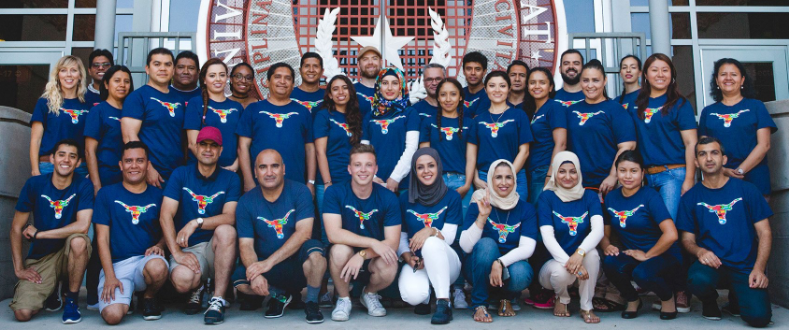
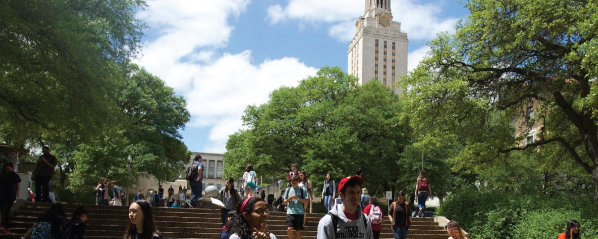

Like the state it calls home, The University of Texas at Austin is a bold, ambitious leader supporting some 55,000 students, 4,600 faculty, 15,000 staff and top national programs across 18 colleges and schools. As Texas' leading research university, UT attracts more than $1.37 billion annually for discovery. Amid the backdrop of Austin, Texas, a city recognized for its creative and entrepreneurial spirit, the University provides a place to explore countless opportunities for tomorrow's artists, scientists, athletes, doctors, entrepreneurs and engineers.

